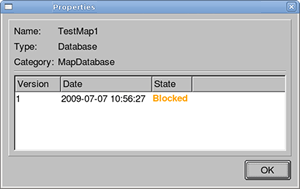
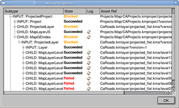
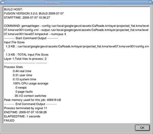
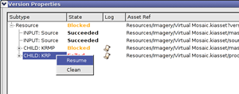
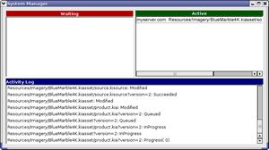

Building assets is the process of preparing each asset for inclusion in another asset--for example, building resources before you include them in a project.
Google Earth Enterprise Fusion allows you to build each project separately or together with its associated database. You can also build imagery and terrain resources and map layers with their associated projects or databases. You must build vector resources separately, however, before you can add them to a project. In fact, most of the work is done at the database level, so building projects is unnecessary.
You can sometimes optimize your work, however, by building one asset while working on another.
Tip: Since builds occur in the background and Google Earth Enterprise Fusion is always running, you can close the Google Earth Enterprise Fusion GUI after you start a build, if you do not need to use it for anything else. In fact, this is a good practice, because it frees up RAM and CPU cycles on the workstation, which can improve build performance.
The building process is the same for all assets--resources, map layers, projects, and databases. This section describes how to build assets, as well as how to debug and resume failed builds, and clean or mark asset versions as bad.
The status of the asset immediately changes to Queued. If no other jobs are waiting, the status changes to In Progress.
Note: Sometimes the status changes so fast that it appears to change directly to In Progress. For very large projects (such as an imagery project with thousands of resources), however, it can take several minutes before the state changes to Queued or In Progress. In extreme cases, it can take 30 minutes or longer. During this time, the Google Earth Enterprise Fusion GUI is unresponsive. Please wait for the GUI to respond.
You can view the progress of the build by double-clicking the Current Version or Current State column for the asset. The Version Properties dialog displays the most recent version of that asset. You can expand the version tree to view the status of the build in real time by clicking the + signs.
Note: You can use the shell commands to set up automatic, successive builds for the same database to ensure that you always have the most up-to-date work for a particular data set. See the Command Line Reference chapter for more information.
After you build an asset, it is ready to be included in the next step.
When you build a new or modified asset, Google Earth Enterprise Fusion assigns it a version number. Using the Asset Manager, you can determine the status of each version, as well as the availability of older versions of assets.The table below lists the possible states for each asset.
| Status | Description |
|---|---|
| Waiting | The asset is waiting for its included assets to finish building. |
| Blocked | The asset build cannot proceed. One or more of its data sources or subcomponents has failed, is marked bad, or is otherwise unavailable. The responsible component is listed. |
| Queued | The asset (or its subcomponents) is queued and waiting to be built. |
| In Progress | The asset (or subcomponents) is actively being built. |
| Failed | The asset build failed. Click
 next to the failed build in the Version Properties dialog to see the Asset Log. See Common Error Messages for more information about each error message that might appear in the log. next to the failed build in the Version Properties dialog to see the Asset Log. See Common Error Messages for more information about each error message that might appear in the log. |
| Succeeded | The asset build (and subcomponents) succeeded. |
| Canceled | The asset build was canceled by a user. |
| Cleaned | The asset version is unavailable, because it has been cleaned. |
| Bad | The asset version is unavailable, because it has been marked as bad. |
The Properties dialog displays a list of all of the build versions for that asset, including the state of each build. The most recent build appears at the bottom of the list.

The Version Properties dialog displays the hierarchical relationship of the asset and its subcomponents.
Note: You can go directly to the Version Properties dialog for the latest asset version simply by double-clicking its Current Version or Current State field in the Asset Manager.

next to the failed build to view the details about a particular failed process.

The log file provides one or more error messages that describe the problem--typically at or near the end of the command output. With long logs, scroll to the end and then look back for the error messages. See the Common Error Messages chapter of this guide for more information about the error messages in the log.
If an asset build fails for an external reason (such as running out of disk space or incorrect file permission settings), you can resume the build after correcting the cause of the failure. When you resume the build, it starts from the point at which failure occurred, rather than repeating the entire build process from the start.
In the example shown in the previous section, the error message is Fusion Warning: Failed to open source and the path and file name that could not open. In that case, the permissions were set wrong on the source file. After you change permission on that file, so that Google Earth Enterprise Fusion can open it, your build should be successful.
Note: The Resume command is available for assets with a status of Failed or Canceled only. Its purpose is to continue a build on an asset where there has been no change to the data itself or to the configuration of the asset. If you change the source data or any configuration detail for the asset, you must start the build from the beginning using the Build command instead of the Resume command.
When Google Earth Enterprise Fusion successfully completes a build that failed in the past, it uses the same version number for that build as for the previously failed build.

The asset build continues from that point forward.
For more details on resuming asset builds, see Handling Asset Build Failures in the Command Line Reference chapter.
You can mark a successfully built asset version as Bad to prevent it from being used by any project or database. For example, you might successfully build an asset, but when you preview it, you realize that it does not look the way you intended.
Google Earth Enterprise Fusion immediately changes the state of the asset to Bad.
Each asset you build in Google Earth Enterprise Fusion has a version number, so you can easily track successive updates to a particular asset. Each version of an asset is saved as a separate group of data files. Since assets with many versions can take up a significant amount of disk space, you can use the Asset Manager to clean unused asset versions.
The clean-up process:
That is, if you clean a database version, it cleans the associated projects and resources as well. If you clean a project version, however, it cleans only the associates resources, not any databases with which the project might be associated. If you clean a resource version, it cleans that resource version only.
Cleaning an asset version DOES NOT remove:
If you attempt to clean an asset version that is used in another asset, the operation fails, and Google Earth Enterprise Fusion displays a list of related assets.
Queued).
If you attempt to clean an asset version that is in the process of being built, Google Earth Enterprise Fusion prompts you to cancel the build before cleaning it.
A message prompts you to confirm that you want to clean the asset.
Google Earth Enterprise Fusion cleans the selected asset version and changes its state to Cleaned.
Tip: When you want to clean asset versions, start by cleaning databases, working from the oldest to the most current. In most cases, this process cleans old versions of all of the projects and resources related to that database.
The System Manager allows you to view the recent activity log and monitor the progress of background tasks, such as building a database.

Note: No user operations are allowed in the System Manager. It is for monitoring purposes only. See getop in the Command Line Reference chapter for the command line equivalent of this information.